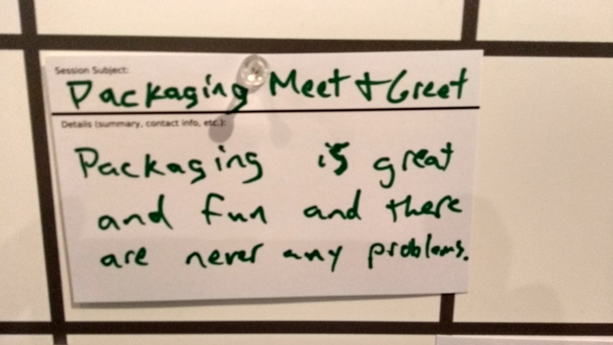

Tools of the Trade:
The Making of a Code Editor
The story of how a Sunday afternoon hack accidentally turned into an IDE.
Nicholas H.Tollervey / ntoll@ntoll.org

Mu is a code editor for beginner programmers...
Who...
...needs another code editor?
Software
(for beginner developers)


Simplify..?

Mu
a Python editor for beginners
(It's the real thing!)
What...
...do folks need?
We obsess over user feedback, UX and trying to find the "real thing" for our users.

How...
...did we build it?
Cross Platform GUI Options

- tkinter - simple cross platform bindings for TK GUI toolkit. 1990's look, no screen reader.
- wxWindows - cross platform "native" GUI toolkit. At the time, no Python3 support or actively maintained (this has since changed).
- GTK - both GTK2 and GTK3 are cross platform GUI toolkits. Raspberry Pi only supports GTK 2. Non-native look on Windows and OSX.
- PyQt - a "native" looking cross platform GUI toolkit with everything but the kitchen sink. Qt4 or 5? Non Pythonic API and includes Qt-ish alternatives for everything.
(We made a Faustian bargain with PyQt5)
PyQt5 unlocked lots of features...
- QScintilla (mature code editor widget) ...with a labyrinthine API
- Cross platform look and feel ...except teachers wanted the same "neutral" UI look on all platforms
- Accessibility for all (e.g. cross platform support for screen readers) ...except screen readers are brittle
- IPython based REPL (via QtConsole -- thanks Thomas) ...but packaging scope creep
Talking of packaging...
Here's what we do:
- Windows - Just use pynsist (thanks again Thomas). Super simple and has the advantage of actually working. ;-)
- OSX - Just use BeeWare's Briefcase (thanks Russ et al). Again, it's simple and has the advantage of actually working.
- Linux - get friendly with folks who package Debian, Fedora and Snaps (or whatever the latest approach is).
- PyPI - as Python developers, this is definitely the simplest way to get Mu.
- All automatically built by CI.
Why...
...are we doing this?

How do we get from this...

... to this ...

... this ...

... this ...

... or this ...

... or even this ..?
By making Mu in a certain way, we're demonstrating a certain programming culture.
Mu is also the means of passing on such a culture.
That culture is open, collaborative and supportive,
...and so is Mu.
Education makes our future possible.
What that future is depends upon who turns up to provide such education.
Don't just sit there, do something!
End (the)... :-)
Find me in the corridor track.
Find Mu here: https://codewith.mu/
Project blog: https://madewith.mu/